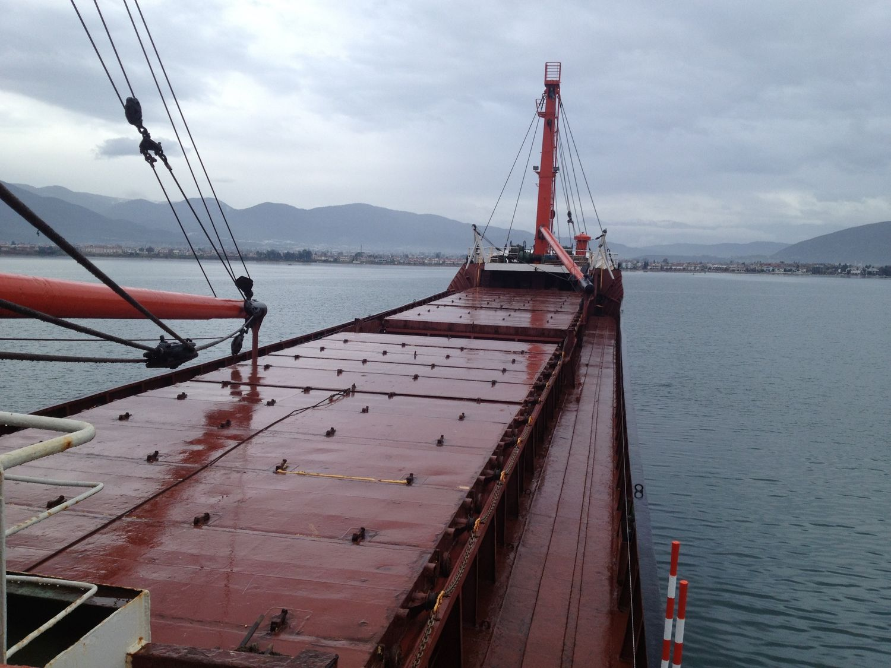
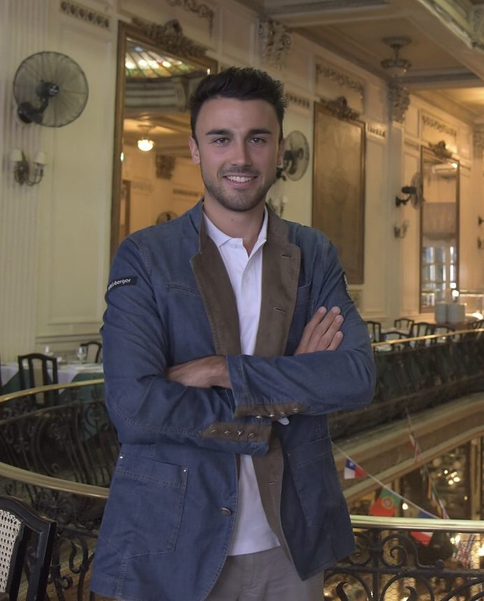

Lateral thinking
Seeing the problem from the side nobody is looking at — and asking the question that changes the brief.
HomeAbout
Onaral · the sea in Turkish
A lateral thinker with affinity to design thinking — always chasing new challenges, exploring the unknown and pushing boundaries.
I grew up between hotel lobbies and the Mediterranean. Today I chase new challenges, cross borders by train, question how we use energy — and let design thinking be the compass.


Deniz is a lateral thinker with affinity to design thinking, and his name — the translation means sea — makes all honor.
He is constantly on the move and looking for new challenges, sometimes stormy and short-tempered, as the sea. He grew up on the south coast of Turkey, where his parents worked in hotel management, and discovered early on that he loves the hospitality business.
He graduated from a top hospitality school in Austria, where he has lived since the end of 2011. Between lessons he organised extracurricular projects, joined a research camp on the Baltic Sea in 2015 and won an internship at the 2016 Summer Olympics in Rio de Janeiro.
Today the curiosity stays the same: always chasing new challenges, exploring the unknown and pushing boundaries — with design thinking as the compass.
/de·ˈniz/ · Turkish · noun
Seeing the problem from the side nobody is looking at — and asking the question that changes the brief.
Raised between hotel lobbies: people first, details always, and a welcome that people remember.
Slow travel, honest questions about energy and waste, and the belief that business can leave things better.
When everything seems to be against you, remember that the airplane takes off against the wind, not with it.

Henry FordOne of Deniz’s favourite linesSix stops that shaped the way of thinking. Drag, swipe or use the arrows.
 Early years
Early yearsGrew up where the Mediterranean meets Anatolia, with parents working in hotel management. Hospitality was the family business and the first classroom.
 2011
2011Moved to Austria at the end of 2011 and began training at one of the country’s top hospitality schools.
2015Part of the school delegation that returned from the European tourism-school championships with medals — and a reception at the Hofburg.
 2015
2015Ten days of science and sea air on the Baltic Sea, which later led to a meeting with the Federal President in Vienna.
 2016
2016Won an internship at the Summer Olympics after a radio call-out on Ö3 — a summer of long days in Rio de Janeiro.
 2018–19
2018–19Took the train to the COP24 climate conference in Katowice and applied to Kaospilot in Aarhus to keep learning how to change things.


From hotel lobbies on the Turkish coast to the Rio Olympics and a climate summit reached by train — travel, sustainability and design thinking shape every story I tell.
Got an idea, an adventure or a question? I read every message.
Get in touch